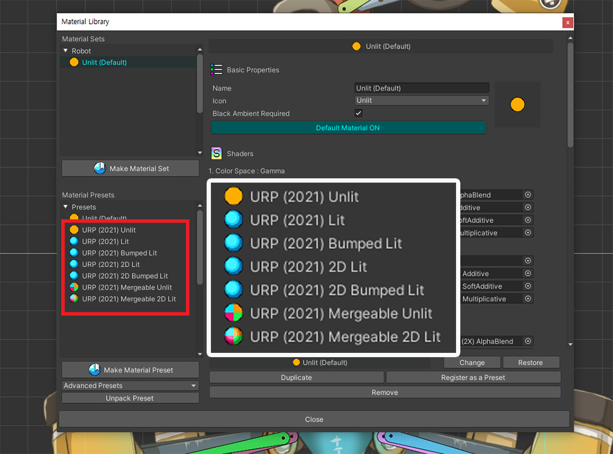
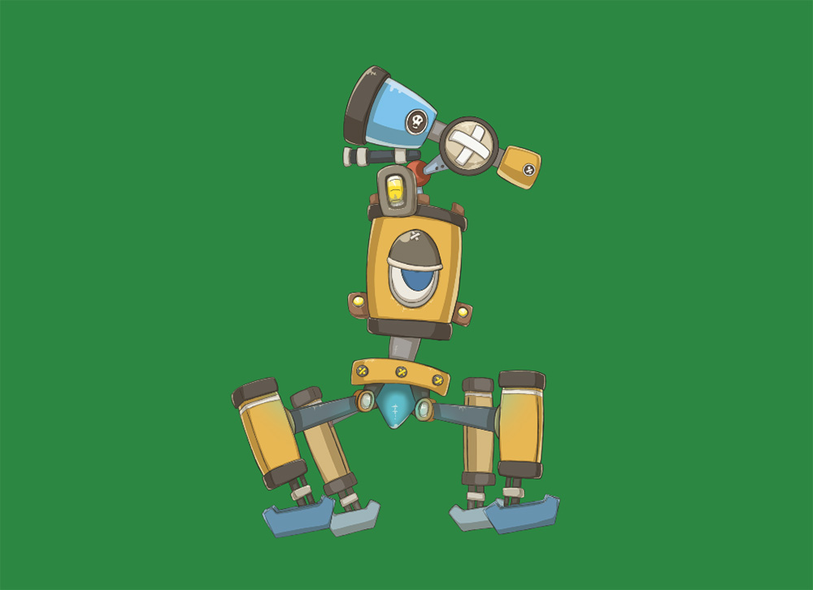
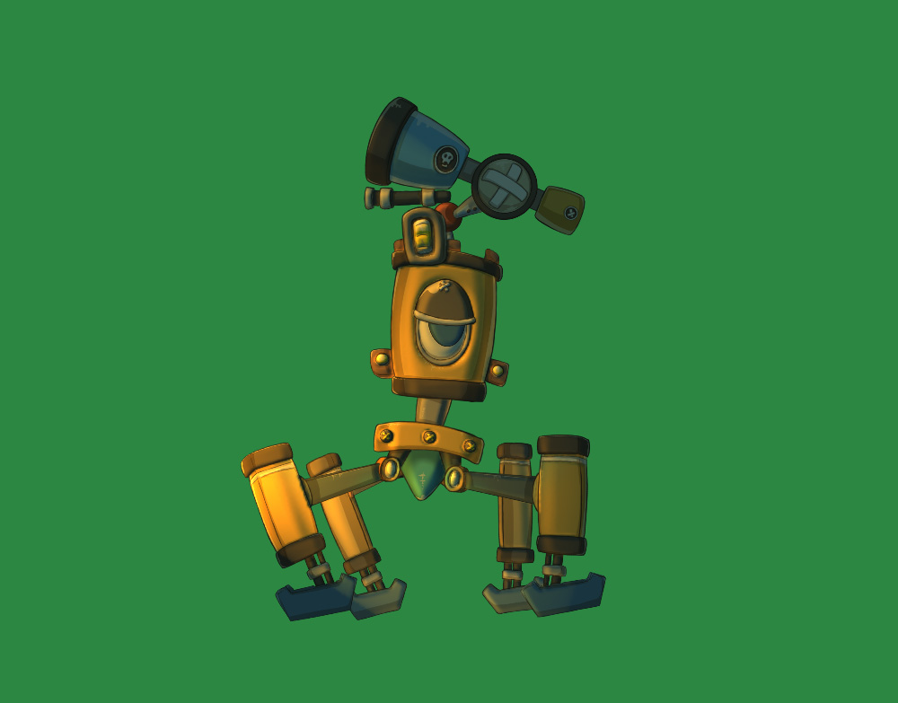
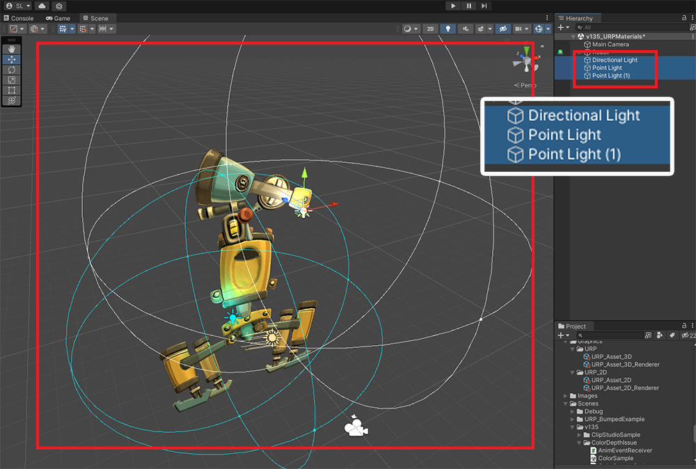
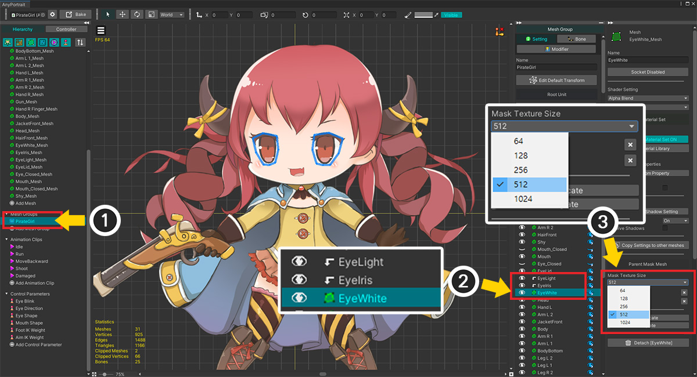

AnyPortrait > 메뉴얼 > Universal Render Pipeline 연동하기
Universal Render Pipeline 연동하기
1.4.7
Universal Render Pipeline (유니버설 렌더 파이프라인)은 유니티 2019.3부터 도입된 새로운 렌더링 방식입니다.
기존의 LWRP를 대체하는 URP는 더 많은 플랫폼과 기기를 지원하며 2D, 3D, VR 및 AR등 다양한 종류 프로젝트에 적용할 수 있습니다.
추가적인 설명에 대해서는 다음의 페이지를 참고해보시는 것을 권장합니다.
- 재질 라이브러리
- Shader Graph로 재질 작성하기
- 커스텀 쉐이더
- About the Universal Render Pipeline Manual (유니티 공식 페이지 / 영어)
Universal Render Pipeline 설정하고 재질 변경하기
Window > Package Manager를 실행합니다.
(메뉴의 위치나 이름은 유니티 버전에 따라 차이가 있을 수 있을 수 있습니다.)

(1) Universal RP 패키지를 선택합니다.
리스트에 패키지가 보이지 않는다면, 로딩에 시간이 조금 걸리므로 기다리시면 됩니다.
(2) Install 버튼을 누릅니다.

URP 패키지가 설치되었다면, Pipeline Asset을 만들고 렌더링에 적용해야합니다.
Assets 폴더 내에서 우클릭을 하거나 Assets 메뉴에서 Create > Rendering > Universal Render Pipeline > Pipeline Asset (Forward Renderer)를 선택합니다.

UniversalRenderPipelineAsset이 생성되었습니다.
또한 URP에서 렌더링 방식을 정의하는 Renderer의 기본 에셋도 같이 생성됩니다.

생성된 URP Asset을 프로젝트에 적용해봅시다.
(1) 유니티 에디터 메뉴의 Edit > Project Settings를 열고, Graphics 항목을 선택합니다.
(2) Scriptable Render Pipeline Settings 항목에 앞서 생성한 UniversalRenderPipelineAsset을 할당합니다.
이제 URP 방식으로 렌더링이 되는데, 아마도 대부분의 재질이 정상적으로 렌더링이 되지 않을 것입니다.

URP를 지원하는 재질을 설치하고 적용해봅시다.
(1) AnyPortrait 에디터를 열고 Root Unit 중 하나를 선택합니다.
(2) Material Library 버튼을 누릅니다.
(3) 설치하고자하는 패키지를 선택합니다. 여기서는 URP Presets 패키지를 선택합니다.
(4) URP Presets이 선택된 상태에서 Unpack Preset 버튼을 누릅니다.
만약 유니티 2021 또는 그 이후의 버전을 사용하신다면 호환성 문제가 해결된 다음의 패키지를 이용해주세요.
- 유니티 2021 ~ 2022 : URP (2021) Presets
- 유니티 2023 또는 그 이후 : URP (2023) Presets
이 프리셋에 대한 추가적인 설명은 이 페이지 하단에 위치합니다.

패키지가 설치되면 재질 라이브러리를 다시 실행해야합니다.
확인 버튼을 누르고 Material Library 버튼을 눌러서 다시 엽니다.

URP를 지원하는 재질 프리셋 3종이 추가되었습니다.
- URP Unlit : URP 환경에서 라이팅이 되지 않고 원본의 색상이 출력되는 재질입니다.
- URP Lit : URP 환경에서 라이팅이 적용되는 재질입니다.
- URP 2D Lit : 2D Renderer가 적용된 URP 환경에서 2D Light에 의해서 라이팅이 적용되는 재질입니다.

추가된 재질 프리셋을 이용하여 재질 세트를 만들어봅시다.
(1) Make Material Set 버튼을 누릅니다.
(2) URP 프리셋 중 하나를 선택합니다. 여기서는 URP Unlit 프리셋을 선택했습니다.
(3) Select 버튼을 누릅니다.

(1) 생성된 URP Unlit 재질 세트를 선택합니다.
(2) Default Material 버튼을 눌러서 기본 재질로 설정합니다.

LWRP 및 URP에서 Clipping Mask를 렌더링을 하는 방식이 다르기 때문에, Bake 설정에서 추가적인 작업을 해야합니다.
(1) Bake 버튼을 누릅니다.
(2) Setting 탭을 선택합니다.
(3) Render Pipeline 항목의 값을 Scriptable Render Pipeline으로 변경합니다.
(1) Bake 탭을 선택합니다.
(2) Bake 버튼을 누릅니다.
유니티 씬에서 캐릭터를 확인해보면, 이제 URP 환경에서도 정상적으로 렌더링되는 것을 볼 수 있습니다.
URP Lit 재질 적용하기
URP Lit 재질을 적용하여 빛의 영향을 받도록 만들 수 있습니다.
재질 라이브러리를 엽니다.
(1) Make Material Set 버튼을 누릅니다.
(2) URP Lit 프리셋을 선택하고 (3) Select 버튼을 누릅니다.
(1) 생성된 URP Lit 재질 세트를 선택합니다.
(2) Default Material 버튼을 눌러서 기본 재질로 설정합니다.
모든 작업이 끝나면 재질 라이브러리를 닫습니다.

Bake를 실행하고 유니티 씬에서 확인해봅시다.

Unlit 재질이 적용된 것과 달리 위 이미지처럼 다소 어둡거나, 아니면 아예 검은색으로 캐릭터가 출력될 것입니다.
Lit 재질은 빛이 없으면 어두워지기 때문입니다.

다양한 종류의 Light 오브젝트를 추가해봅시다.
게임을 실행하면 라이팅이 적용된 캐릭터를 볼 수 있습니다.
2D Renderer가 적용된 URP에서 렌더링하기
URP는 LWRP 2D의 기능을 포함하는 방식입니다.
간단히 2D Renderer를 적용하여 2D Light를 이용하는 렌더링 방식으로 전환하는 것이 가능합니다.

2D Renderer 에셋을 생성합니다.
Assets 메뉴나 Assets 폴더에서 우클릭을 하고,
Create > Rendering > Universal Renderer Pipeline > 2D Renderer (Experimental)을 선택합니다.

새로운 2D Renderer 에셋 (New 2D Renderer Data)이 생성되었습니다.

(1) 앞서 만든 UniversalRenderPipelineAsset을 선택합니다.
(2) Renderer List의 항목에 2D Renderer (New 2D Renderer Data)를 할당합니다.
(3) 2D Renderer를 위한 재질이 아직 적용되기 전이므로 유니티 씬의 캐릭터에 라이팅이 적용되지 않습니다.
URP 2D를 위한 재질을 설정해봅시다.

위에서 설명한 방법과 거의 동일합니다.
(1) 재질 라이브러리를 열고 Make Material Set 버튼을 누릅니다.
(2) 이번엔 URP 2D Lit 프리셋을 선택하고 (3) Select 버튼을 누릅니다.

(1) 생성된 URP 2D Lit 재질 세트를 선택하고 (2) Default Material 버튼을 눌러서 기본 재질로 설정합니다.

Bake를 실행하고 유니티 씬에서 확인해봅시다.

Lit 재질이므로 빛이 없는 씬에서는 캐릭터가 어둡게 보여집니다.
현재, 기본적인 Light 오브젝트가 배치된 상태이지만, 2D Renderer에 맞는 별도의 Light 오브젝트들이 필요합니다.

2D Light 오브젝트를 추가합니다.
Light > 2D 카테고리에 2D Renderer에서 지원되는 종류의 2D Light들이 있습니다.

2D Light들을 씬에 배치합니다.
URP 2D 환경에서 예쁘게 렌더링되는 캐릭터를 볼 수 있습니다.
URP를 지원하는 Shader Graph 에셋

재질 라이브러리에서 URP Presets 패키지를 설치하면 위와 같이 URP용 재질 에셋들이 추가됩니다.
(Assets > AnyPortrait > Assets > Shaders > Advanced 폴더)
이 에셋들은 Shader Graph로 작성되었습니다.

이 에셋을 열면 Shader Graph의 내용을 볼 수 있습니다.
프리셋으로 제공되는 재질들은 기본적인 라이팅만 수행합니다.
이 에셋을 바탕으로 Shader Graph를 작성하여 다양한 렌더링 기법을 적용해보세요.
URP 재질 사용에 관한 주의 사항
URP는 최신 버전인 유니티 2019.3에 도입된 새로운 기능입니다.
URP는 장점이 많은 렌더링 방식이지만, 하위 호환이 안된다는 큰 문제가 있습니다.
따라서 AnyPortrait에서도 기존과 다르게 URP 재질은 Shader Graph의 형태로 작성하여 제공합니다.
다만, Shader Graph의 기능의 한계로 인하여 다음과 같은 제약 사항이 있으니 주의하시길 바랍니다.
1) 메시의 Blend 방식 중 Soft Additive 방식이 지원되지 않습니다. 대신 Additive의 Shader가 Soft Additive에도 적용됩니다.
2) 메시의 Blend 방식 중 Multiplicative 방식은 2X Multiply가 아닌 Multiply 방식으로 계산됩니다.
3) URP 2D Lit에서는 Additive (Soft Additive), Multiplicative 방식의 메시는 빛의 영향을 받지 않습니다.
유니티 2021 및 최신 버전을 지원하는 URP (2021) 프리셋
1.3.5
유니티 2021 이전 버전에서는 URP의 많은 기능들이 "실험" 단계였습니다.
그리고 유니티 2021부터는 이것들이 정식 기능으로 바뀌면서 몇가지 변경점이 생겼습니다.
안타깝게도 이 변경점에 의해서 AnyPortrait에서 제공하는 기존의 URP 재질 프리셋들이 정상적으로 동작하지 못하는 문제가 발생했습니다.
AnyPortrait v1.3.5에서 추가된 "URP (2021)" 프리셋을 이용해서 문제를 해결하고, 또한 추가적인 재질을 사용해봅시다.
이 재질 프리셋은 유니티 2021 및 2022.a에서 동작합니다.

새로운 URP 프리셋을 설치하는 방법도 기존과 동일합니다.
(1) 재질 라이브러리를 엽니다.
(2) 프리셋 패키지 리스트에서 (3) "URP (2021) Presets"을 선택합니다.

(1) "URP (2021) Presets"가 선택된 상태에서 Unpack Preset 버튼을 누릅니다.
(2) 설치 안내 메시지가 나타납니다. Okay 버튼을 누릅니다.

다시 재질 라이브러리를 열면 URP (2021)에 포함된 재질 프리셋들이 설치된 것을 볼 수 있습니다.
프리셋들은 각각 다음과 같습니다.
1. URP (2021) Unlit : 빛의 영향을 받지 않는 기본 재질입니다.
2. URP (2021) Lit : URP의 기본 렌더러에서 빛의 영향을 받는 재질입니다.
3. URP (2021) Bumped Lit : URP의 기본 렌더러에서 노멀맵(또는 범프맵)을 적용할 수 있는 재질입니다.
4. URP (2021) 2D Lit : URP의 2D 렌더러에서 빛의 영향을 받는 재질입니다.
5. URP (2021) 2D Bumped Lit : URP의 2D 렌더러에서 노멀맵(또는 범프맵)을 적용할 수 있는 재질입니다.
6. URP (2021) Mergeable Unlit : URP에서 재질 병합을 할 수 있는 빛의 영향을 받지 않는 재질입니다.
7. URP (2021) Mergeable 2D Lit : URP의 2D 렌더러에서 재질 병합을 할 수 있는 빛의 영향을 받는 재질입니다.
참고
Mergeable 프리셋에 대해서는 관련 페이지를 참고해주세요.
대부분의 재질 프리셋들은 기존 URP 프리셋들과 거의 동일하게 동작합니다.
Unlit, Lit, 2D Lit 프리셋들은 기존과 동일합니다.
위의 설명을 보셨다면, 아래에서는 기본적인 사용법 및 URP (2021) 패키지에서 추가된 재질에 대해서 설명합니다.

먼저 Unlit 재질을 먼저 적용해봅시다.
(1) Make Material Set 버튼을 누릅니다.
(2) URP (2021) Unlit을 선택합니다.

(1) 추가된 재질 세트를 선택합니다.
(2) Default Material 버튼을 눌러서 ON으로 설정합니다.

(1) Bake 다이얼로그를 엽니다.
(2) Setting 탭을 선택합니다.
(3) Render Pipeline 옵션의 값을 Scriptable Render Pipeline으로 변경합니다.

(1) 설정이 모두 완료되었다면 Bake를 실행합니다.

위와 같이 URP 환경에서 정상적으로 렌더링되는 것을 볼 수 있습니다.

Unlit이 아닌 빛의 영향을 받는 재질을 사용하고자 한다면 이전 버전의 URP와 마찬가지로 Renderer에 따라서 다른 재질을 사용해야합니다.
URP는 위와 같이 두가지 종류의 Renderer중 하나를 선택해서 렌더링을 수행합니다.
새로 추가된 Bumped Lit 재질 사용법을 각각의 Renderer에 맞게 설명드립니다.
2D Renderer(일명 URP 2D)를 사용하는 환경에서의 Bumped Lit 재질 사용법을 먼저 알려드립니다.

(1) Make Material Set 버튼을 누릅니다.
(2) URP 2D 환경에서는 URP (2021) 2D Lit 또는 URP (2021) 2D Bumped Lit을 이용할 수 있습니다. 이 페이지에서는 URP (2021 2D Bumped Lit을 이용해보겠습니다.

(1) 추가된 재질 세트를 선택합니다.
(2) Default Material을 ON으로 활성화합니다.

이 재질 세트는 "_BumpMap"이라는 속성이 추가되어있습니다.
(1) 이미지들에 맞는 노멀맵들을 각각 지정합니다.

Bake를 하고 유니티 씬을 엽니다.
노멀맵을 확인해보기 위해서는 빛을 추가해야합니다.
(1) Hierarchy에서 우클릭을 합니다.
(2) Light의 항목에 Light 2D 객체들이 보입니다. 먼저 Global Light 2D를 선택해서 추가해봅시다.

(1) 추가된 Light 2D를 선택하고 색을 변경합니다.
(2) 캐릭터가 빛의 색상에 맞게 렌더링되는 것을 볼 수 있습니다.

다음은 노멀맵에 의한 부피감을 확인해봅시다.
(1) 방향성을 가지는 Spot Light 2D를 추가합니다.

(1) 빛을 배치하고 범위나 방향 등을 설정합니다.
(2) 빛의 색상을 설정합니다.
(3) Normal Maps의 Quality 옵션의 값을 Fast나 Accurate로 변경합니다.

노멀맵에 의해서 부피감있게 렌더링되는 캐릭터를 볼 수 있습니다.

2D Lit 재질 프리셋의 렌더링 결과와 비교해보세요.
재질에 따라서 렌더링 결과가 다른 것을 볼 수 있습니다.
이번에는 2D Renderer가 아닌 Universal Renderer가 설정된 환경에서의 재질을 설정해봅시다.

(1) Make Material Set 버튼을 누릅니다.
(2) URP (2021) Lit이나 URP (2021) Bumped Lit을 선택할 수 있습니다. 여기서는 URP (2021) Bumped Lit을 선택해봅시다.

나머지 과정은 동일합니다.
생성된 재질 세트를 기본 재질로 설정하고, 노멀맵을 지정한 후, Bake를 실행해주세요.

URP 2D와 달리, 일반적으로 사용되는 Directional Light나 Point Light를 이용할 수 있습니다.
빛을 적절히 씬에 배치해주세요.

노멀맵이 적용된 렌더링 결과를 동일하게 확인할 수 있습니다.
유니티 2023 또는 그 이후 버전을 사용한다면 URP (2023) 프리셋을 설치하고 이용해주세요.
해당 프리셋의 사용 방법과 특징은 URP (2021)과 동일합니다.
Perspective 카메라로 렌더링할 때의 클리핑 메시 문제
URP에서도 3D 카메라, 즉 Perspective 카메라를 이용하여 3D 레벨에서 캐릭터를 렌더링을 하는 것이 가능합니다.
"빌보드" 기능은 URP에서도 동작을 하기 때문입니다. (관련 페이지)
그렇지만 Perspective 카메라로 전환을 했을 때 "클리핑 메시"는 렌더링에 조금 문제가 있습니다.

URP 환경에서 빌보드 옵션을 이용해서 Perspective 카메라로 렌더링을 한 화면입니다.
눈 부분의 클리핑 메시가 다소 뿌옇게 보입니다.
이것은 클리핑 렌더링을 위한 "렌더 텍스쳐"의 해상도가 원인입니다.
AnyPortrait는 낮은 해상도의 렌더 텍스쳐로 고화질의 클리핑 렌더링을 하는 기능을 가지고 있습니다.
하지만 이 기능은 URP의 경우엔 Orthographic 타입의 카메라에서만 제대로 동작합니다.
따라서 Perspective 카메라로 렌더링을 한다면, 순수하게 "렌더 텍스쳐의 해상도"를 증가시켜서 클리핑 메시의 품질을 높일 필요가 있습니다.

(1) 메시 그룹을 선택합니다.
(2) 클리핑 마스크가 되는 메시를 선택합니다. (위의 경우엔 "EyeWhite" 메시를 선택합니다.)
(3) Mask Texture Size 옵션을 변경합니다. 이 옵션이 클리핑 렌더링을 위한 렌더 텍스쳐의 해상도입니다. 큰 값일 수록 클리핑 렌더링의 품질이 좋아집니다. 여기서는 "512"를 선택했습니다.

Bake를 실행하고 다시 확인해봅시다.
클리핑 메시였던 눈이 뿌옇게 보여지는 문제가 거의 없어진 것을 볼 수 있습니다.